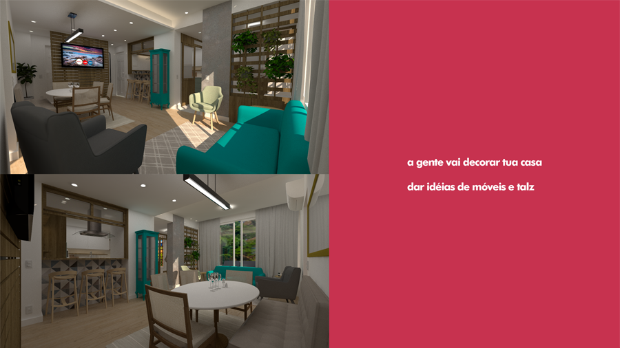
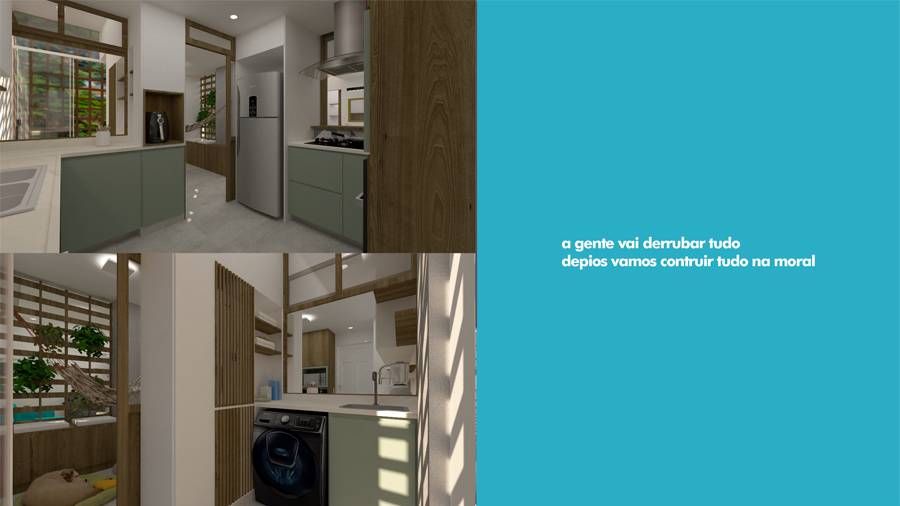
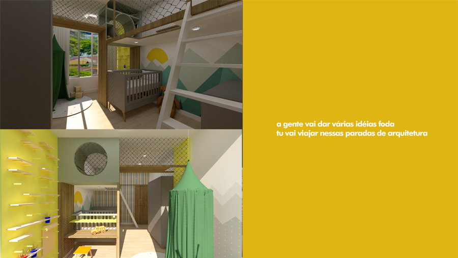
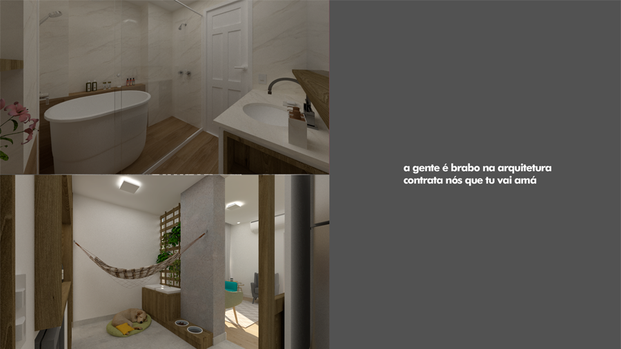

Renova — espaços integrados para receber
A proposta aproxima sala de estar e jantar em um ambiente contínuo e acolhedor. O sofá turquesa cria um ponto de destaque, enquanto a madeira e os tons neutros ajudam a manter a composição equilibrada.
Painéis ripados, iluminação distribuída e plantas completam o espaço com textura e personalidade. A disposição dos móveis deixa a área de convivência convidativa para descansar e receber.
A proximidade entre os ambientes ajuda a manter a conversa fluindo durante as refeições e os momentos de descanso. Cada área tem sua função, mas os materiais e as cores criam uma leitura visual única.
O resultado valoriza a circulação e os detalhes: superfícies de madeira trazem calor, enquanto os tecidos e os tons claros equilibram os elementos mais marcantes da decoração.

Transforma — cozinha e serviço com unidade visual
Os ambientes combinam armários em tons suaves, superfícies claras e detalhes de madeira. A continuidade entre cozinha e lavanderia ajuda a organizar as tarefas sem perder a sensação de integração.
As diferentes vistas mostram soluções de armazenamento e bancadas que aproveitam o espaço disponível. A paleta discreta mantém a composição leve, enquanto os acabamentos dão contraste e aconchego.
Na cozinha, os armários e os eletrodomésticos se organizam ao redor das áreas de preparo. Na lavanderia, prateleiras e superfícies de apoio deixam os itens de rotina mais próximos.
A madeira aparece como um fio condutor entre os espaços. Combinada aos tons neutros, ela ajuda a dar unidade ao conjunto sem tirar o foco da funcionalidade de cada ambiente.

Consulta — um quarto infantil para brincar e crescer
A cama elevada, a escada e os nichos aproveitam a altura do quarto e liberam área para brincar. Prateleiras e espaços de guardar mantêm brinquedos e objetos do dia a dia por perto.
Verde, amarelo e madeira criam um clima lúdico sem deixar o ambiente carregado. A entrada de luz natural e os detalhes divertidos completam um espaço pensado para acompanhar diferentes momentos da infância.
A área livre no piso oferece espaço para brincadeiras, enquanto os nichos permitem deixar livros e brinquedos à vista. A cortina e as formas geométricas acrescentam textura e movimento à decoração.
A combinação de elementos funcionais e lúdicos dá ao quarto uma identidade própria. Cores pontuais e materiais naturais ajudam a manter o ambiente acolhedor e agradável no dia a dia.

Simpla — conforto nos detalhes
O banheiro reúne banheira e bancada em uma composição clara, com formas simples e detalhes de madeira que aquecem o ambiente. A iluminação suave reforça a sensação de tranquilidade.
Em outra vista, um canto para o cachorro integra rede e caminha ao espaço da casa. É uma solução que considera o conforto do animal junto à organização e ao uso cotidiano dos ambientes.
No banheiro, os revestimentos claros e as linhas simples deixam a banheira e a bancada em evidência. A madeira acrescenta contraste e aproxima a composição de uma atmosfera mais acolhedora.
O espaço do cachorro aproveita um canto próprio sem parecer separado do restante da casa. A rede e a caminha criam pontos de descanso, mantendo os acessórios do animal integrados ao ambiente.